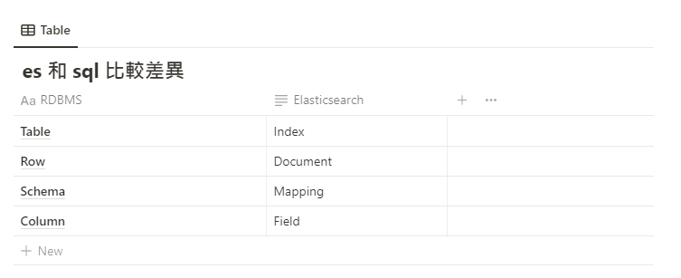

Elasticsearch
elasticsearch 資料回傳的格式

- _index：document 所屬的 index 名稱
- _type：document 類型 (例如：_doc)
- _source：document 的原始 JSON 資料樣貌
- _version：版本訊息 (有這欄位就表示 ES 具有版本控管的能力)
- _score：查詢時的算分結果 (每次的搜尋都會根據 document 對於搜尋內容的相關度進行算分)

Elasticsearch 基本操作
並建立index
PUT /global_trade
設定index欄位mapping狀態
PUT global_trade
{
"mappings" : {
"properties" : {
"@timestamp" : {
"type" : "date"
},
"@version" : {
"type" : "text",
"fields" : {
"keyword" : {
"type" : "keyword",
"ignore_above" : 256
}
}
},
"Buyers" : {
"type" : "keyword"
},
"Buyers Contacts" : {
"type" : "text"
},
"Date" : {
"type" : "date",
"format" : "yyyy/MM/dd"
},
"Export Country" : {
"type" : "keyword"
},
"Quantity" : {
"type" : "double"
},
"import and export" : {
"type" : "keyword"
},
"message" : {
"type" : "text",
"fields" : {
"keyword" : {
"type" : "keyword",
"ignore_above" : 256
}
}
},
"path" : {
"type" : "text",
"fields" : {
"keyword" : {
"type" : "keyword",
"ignore_above" : 256
}
}
}
}
}
}
index 改名
POST /_reindex
{
"source": {
"index": "user_exhibition"
},
"dest": {
"index": "user_exhibition_20210722"
}
}
刪除 index
DELETE itc_contract
得到所有index
GET _cat/indices?v
得到global_trade 開頭的 index
GET _cat/indices/global_trade*?v
取得index的欄位mapping狀態
GET global_trade/_mapping
取得index data_recrode0 2000筆資料
GET data_recrode0/_search?size=2000
查詢index global_trade* 裡數量排名前10筆的buyer 並統計數量
GET global_trade*/_search
{
"size" : 0,
"aggs": {
"buyers_count": {
"terms": {
"field": "Buyers",
"size": 10
}
}
}
}
建立一筆資料
POST /news/_doc/
{
"id": 36167,
"title": "紐西蘭政府公布疫苗施打階段性計畫",
"content": "紐國在加碼採購輝瑞疫苗，足以接種全國民眾後，3月10日公佈階段性接種計畫，目標是在未來4個月內優先接種高風險族群約200萬人，7月起接種一般民眾。\n\r\n接種將分成4大組，以16歲以上民眾為對象，不包含16歲以下兒童\n\r\n[第1組]3月底前完成接種邊境和隔離檢疫工作人員，以及同居家眷。\n\r\n[第 2 組]自2月到5月，為48萬名醫護人員及在高風險環境工作人員接種。\n\r\n[第3組]自5月接種170萬優先族群，包括老年人、慢性病、癌症患者及孕婦等\n\r\n[第4組]自7月接種其他約200萬一般民眾\n\xa0\n",
"date": "2021-03-11",
"continent": "亞太地區",
"country2": "紐西蘭"
}
新增一筆 mapping (欄位)
PUT /log_test/_mapping
{
"properties": {
"column3": {
"type": "text"
}
}
}
移除message欄位
POST /global_trade/_update_by_query
{
"script": {
"inline": "ctx._source.remove('')"
},
"query": {
"bool": {
"must": [
{
"exists": {
"field": "message"
}
}
]
}
}
}
查詢欄位import Country 符合 Bielorrusia
GET global_trade/_search
{
"query": {
"match_phrase": {
"import Country": "Bielorrusia"
}
}
}
用聚合指令將company_id分群，類似group by的指令
POST itc_company_new/_search
{
"query": {
"match": {
"company_name": {
"query": "3m",
"operator": "AND"
}
}
},
// 這邊設定0不顯示上方query查詢結果
"size": 0,
"aggs": {
"by": {
"terms": {
"field": "company_id",
"size": 10
},
// 顯示分群資料內容
"aggs": {
"companies": { "top_hits": { "_source": "*", "size": 1 }}
}
},
// 顯示分群的統計數量
"unique_companies": {
"cardinality": {
"field": "company_id"
}
}
}
}
更新多筆資料(BY query)，更新多欄位script要用 ’ ; ’ 隔開
POST /itc_company_new/_update_by_query
{
"query": {
"wildcard": {
"company_id": "1058027"
}
},
"script": "ctx._source.put('unchecked_website', '');ctx._source.put('checked_website', '')"
}